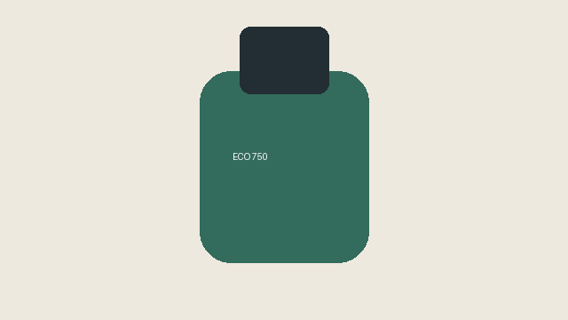

Precio: 24,90 €. Conserva tus bebidas durante tus excursiones.
Ficha de producto ficticio creada para esta práctica. Actualizada el .
Especificaciones técnicas
| Grupo | Característica | Valor |
|---|---|---|
| Construcción | Material | Acero inoxidable |
| Aislamiento | Doble pared al vacío | |
| Dimensiones | Capacidad | 750 ml |
| Peso | 350 g | |
| Incluye botella y tapón hermético. | ||
Preguntas frecuentes
¿Se puede lavar en el lavavajillas?
Se recomienda lavarla a mano para proteger el acabado.
¿Sirve para bebidas calientes?
Sí. Evita llenarla hasta el borde y comprueba la temperatura antes de beber.
¿Contiene BPA?
No, los materiales en contacto con la bebida están libres de BPA.
Glosario
- BPA
- Bisfenol A, sustancia utilizada en algunos plásticos.
- Acero inoxidable
- Aleación metálica resistente a la corrosión.
- Aislamiento al vacío
- Separación entre paredes que reduce la transferencia de calor.
Opinión de un cliente
Testimonio ficticio para mostrar el marcado HTML:
“La llevo cada día a clase y mantiene el agua fresca.”